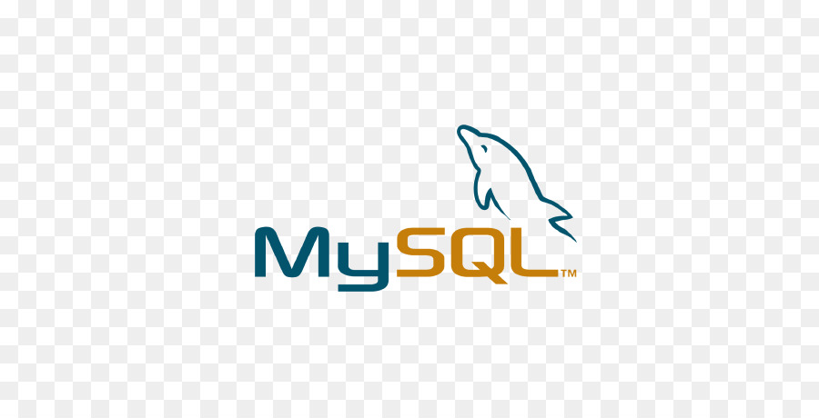

IT Support
Windows 10/11, troubleshooting, software installation, system diagnostics, user support, and account recovery.
Open to IT Support, Software Support, and Junior Developer roles
I combine troubleshooting, user support, programming, and cloud fundamentals to solve technical problems and build practical digital projects.
About Me
I’m Osan Paudel, a Software Support and IT Support professional based in Hamilton, Ontario. I completed a two-year Computer Systems Technician – Software Support diploma at Mohawk College, where I gained experience in software support, web development, programming, databases, systems analysis, testing, and technical communication.
My background combines IT support and development skills. I have worked with Windows troubleshooting, Active Directory labs, VirtualBox, Azure Fundamentals, JavaScript projects, C# games, Python, Java, HTML, CSS, PHP, and MySQL.
Skills
Grouped by the type of technical problems I can help solve.
Windows 10/11, troubleshooting, software installation, system diagnostics, user support, and account recovery.
Active Directory, user accounts, password resets, DNS, DHCP, TCP/IP, and Wi-Fi troubleshooting.
Microsoft Azure Fundamentals, AZ-900, cloud concepts, Azure services, identity, pricing, and security basics.
HTML, CSS, JavaScript, PHP, responsive design, interactive web features, and front-end development.
JavaScript, Python, Java, C#, C, PHP, debugging, problem-solving, and project-based learning.
MySQL, SQL basics, GitHub, VS Code, Visual Studio, IntelliJ, VirtualBox, and Microsoft Office.





Projects
A clean showcase of IT labs, web projects, programming projects, and game development practice.
Built a self-directed Windows Server lab using VirtualBox. Installed and configured Active Directory Domain Services, created users and groups, practiced password resets, and performed basic account management tasks.
Designed and developed a responsive portfolio website to showcase technical skills, projects, certifications, experience, and resume.
Built a browser-based game where the player controls a warship, attacks enemy ships, avoids obstacles, and uses movement and scoring logic.
Created a jumping obstacle game with timed movement, basic animation, scoring, and collision detection.
Developed an interactive puzzle game using JavaScript with user input, logic handling, and problem-solving mechanics.
Created a C# game project to practice object-oriented programming, game logic, user interaction, and debugging.
Practiced support tasks including checking IP configuration, troubleshooting connectivity, installing software, and documenting basic fixes.
Completed Microsoft Azure Fundamentals AZ-900 and learned core cloud concepts, Azure services, pricing, identity, and security basics.
Experience
Support experience, technical education, and hands-on learning.
June 2024 – April 2026
December 2022 – July 2023
Mohawk College
Certifications
Certifications and learning milestones that support my technical foundation.
Cloud concepts, Azure services, pricing, identity, security, and compliance fundamentals.
Technical support fundamentals, networking basics, operating systems, troubleshooting, and customer support concepts.
Contact
I am open to entry-level IT Support, Software Support, Help Desk, Application Support, Technical Support, and Junior Developer opportunities.